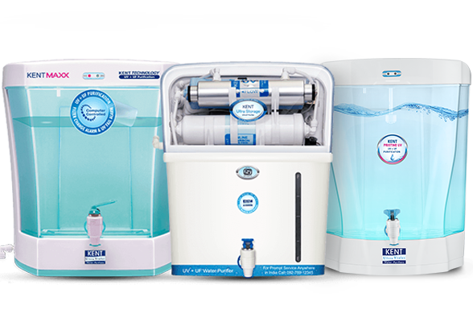

Main article: Point of use water filter Water purifier Point-of-use filters for home use include granular-activated carbon filters used for carbon filtering, depth filter, metallic alloy filters, microporous ceramic filters, carbon block resin, microfiltration and ultrafiltration membranes. Some filters use more than one filtration method. An example of this is a multi-barrier system. Jug filters can be used for small quantities of drinking water. Some kettles have built-in filters, primarily to reduce limescale build-up.

Main article: Portable water purification Water filters are used by hikers,[5] aid organizations during humanitarian emergencies, and the military. These filters are usually small, portable and lightweight (1–2 lb (0.45–0.91 kg) or less). These usually filter water by working a mechanical hand pump, although some use a siphon drip system to force water through, while others are built into water bottles. Dirty water is pumped via a screen-filtered flexible silicon tube through a specialized filter, ending up in a container.These filters work to remove bacteria, protozoa and microbial cysts that can cause disease. Filters may have fine meshes that must be replaced or cleaned, and ceramic water filters must have its outside abraded when they have become clogged with impurities.
Ceramic filters represent low-cost solutions to water filtration and are widely adhered to despite being one of the oldest methods of filtration.[6] These filters are found not only inside the homes of families but also utilized in industrial engineering (as high-temperature filters) for several processes.[7]
The conventional ceramic filters used for day-to-day water consumption, known as candle-type filters, work with gravity and a central candle, which makes the filtration process significantly long.